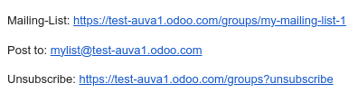

Mail groups¶
The mail groups feature allows website visitors to have a public discussion by email. They can join a group to receive emails from other group members (i.e., website users who have subscribed to the group) and send new ones to all group members.
To activate the feature, install the Website Mail Group
(website_mail_group) module.
Note
The mail groups feature is not to be confused with the Mailing lists in the Email Marketing app.
Configuring mail groups¶
To configure mail groups, proceed as follows:
Configure a custom email alias domain by accessing the General settings, scrolling down to the Discuss section, enabling the Custom Email Server feature, and entering the Alias domain (e.g.,
@mycompany.com).Go to , then click New.
Specify a Group Name, the Email Alias, and a Description.
Enable Moderate this group and specify the Moderators if you wish to moderate messages from this group. Alternatively, if the group is not moderated, you can define Responsible Users who can manage the messages in the group.
In the Privacy tab, define who can subscribe to the mail group:
Everyone: to make the mail group public so anyone can subscribe to it;
Members only: to only allow users defined as members to subscribe to the mail group;
Selected group of users: to only allow users from the Authorized group to subscribe to the mail group.
If the mail group is moderated, you can automatically notify authors when their message is pending moderation by enabling Automatic notification in the Notify Members tab and writing the Notification message.
If you wish to send out guidelines to new subscribers, enable Send guidelines to new subscribers and write them in the Guidelines tab. This is particularly useful when the mail group is moderated.
Using mail groups¶
Subscribing/unsubscribing¶
Based on the configuration of the mail group,
users can subscribe to and unsubscribe from mail groups from the website page (/groups by default).

Internal users can also do this from , using the Join and Leave buttons.
Sending messages¶
To send messages to a mail group, website users can email the mail group’s email address. Internal users can also create messages directly from Odoo. To do so, go to , select the mail group, click the Emails smart button, and click New. Then, fill in the fields and click Send.
Tip
The list of messages can also be accessed by selecting the group from the
/groupswebsite page.Group members can also unsubscribe from the group, access the mail group page, and send emails to the group using the URLs in the footer of any group email they have received.

Moderating mail group messages¶
If the Moderate this group feature has been enabled for the mail group, one of the Moderators must approve the group’s messages before they are dispatched to the other members.
To moderate messages, go to , select the mail group, and click the To review smart button. You can moderate messages using the buttons at the end of the message line or select a message to view its content and moderate it accordingly.
The following actions are available:
Accept: to accept the email and send it to the mail group members.
Reject: to reject the email. In the pop-up window that opens, click Reject Silently to reject the email without notifying the author, or specify an explanation for rejecting the message, then click Send & Reject to reject the message and send the explanation to the author.
Whitelist: to whitelist the author, i.e. automatically accept all of their emails. As a result, a moderation rule is created for the author’s email address with the status Always allow.
Ban: to blacklist the author, i.e. automatically discard all their emails. In the pop-up window that opens, click Ban to ban the author without notifying them, or specify an explanation, then click Send & Ban to ban the author and send them the explanation. As a result, a moderation rule is created for the author’s email address with the status Permanent ban.
Note
Messages can also be moderated from the group’s list of messages. Go to , select the mail group and click the Emails smart button.